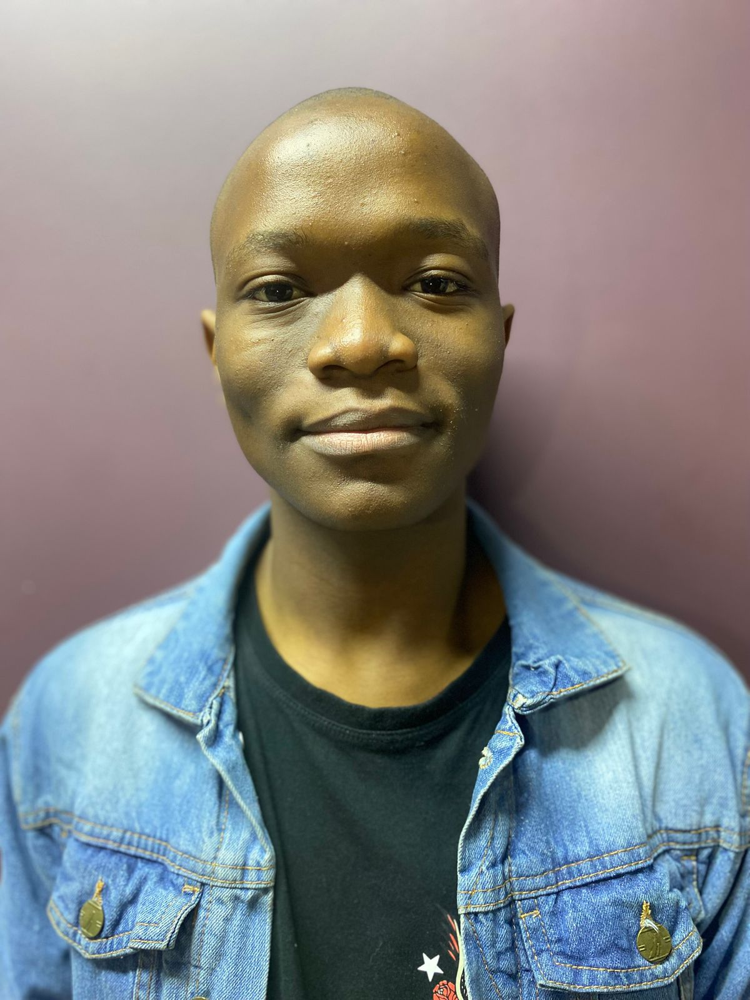
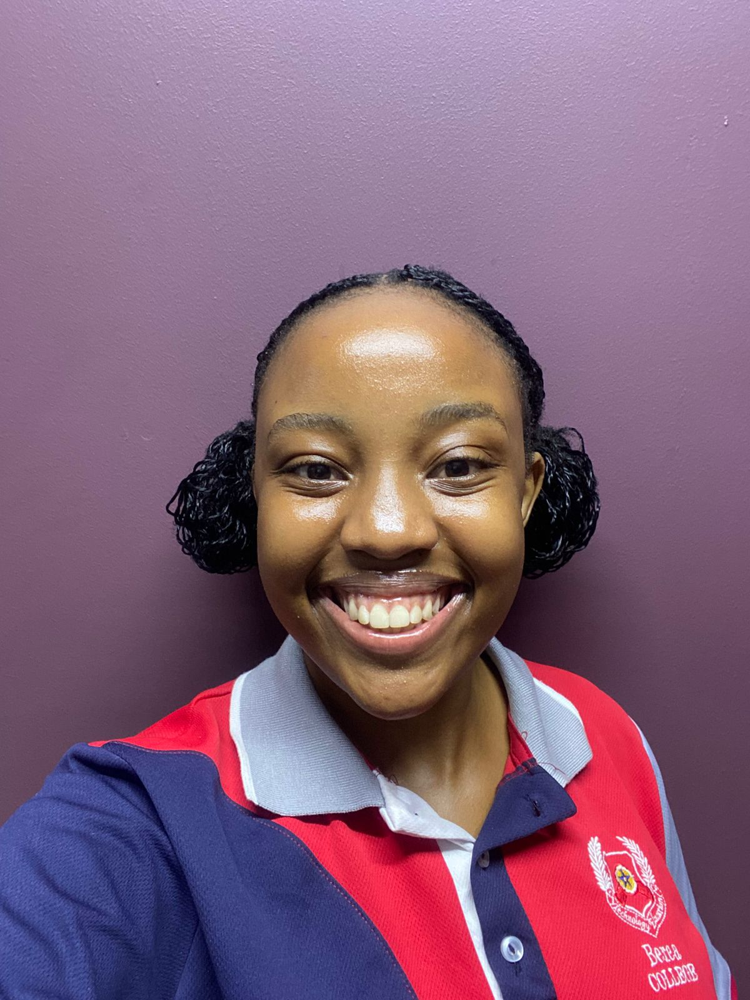
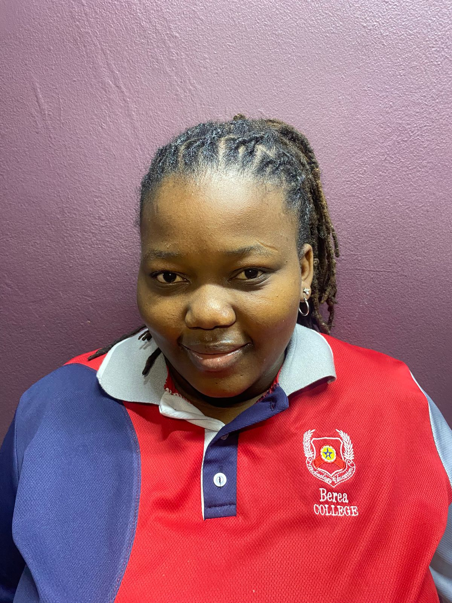
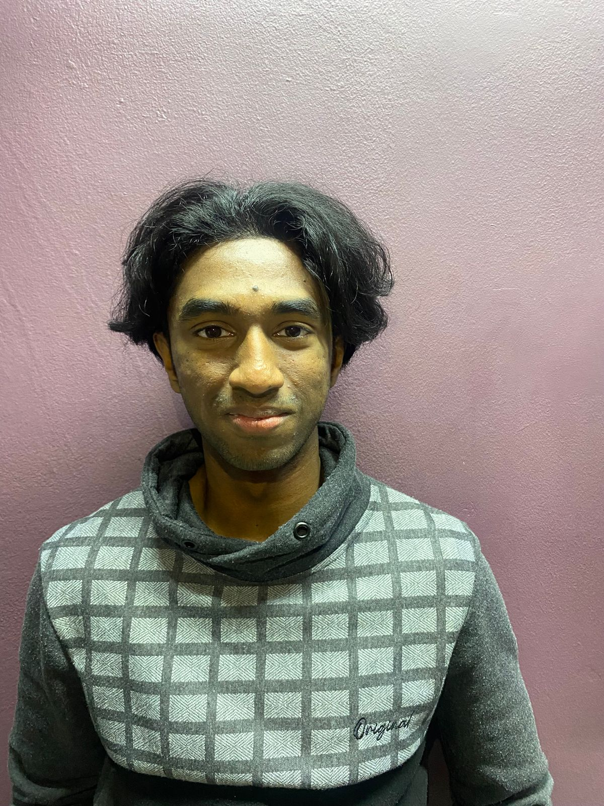
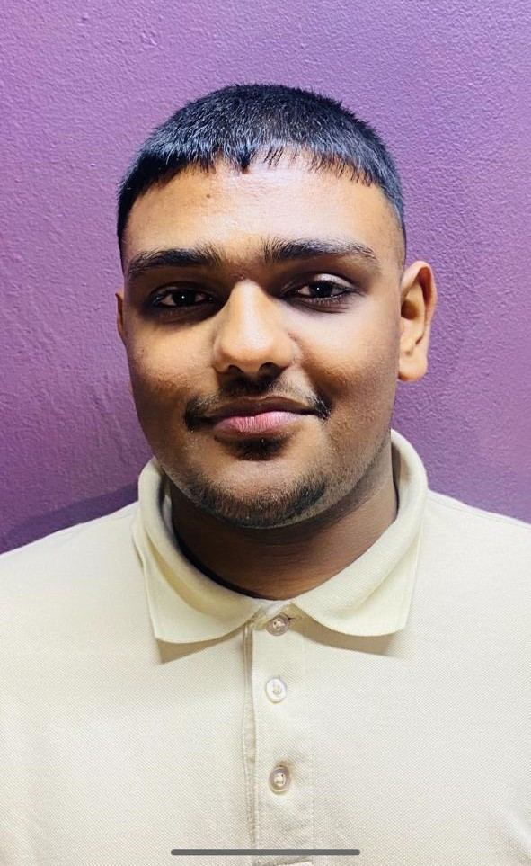

Meet our team members

Cache Cat
 'Cache Cat is an exceptional
developer and team player from
whom you learn new skills and
knowledge everyday. His key strengths
include innovative problem-solving, attention
to detail and a collaborative mindset. He
consistently delivers high-quality work and is
a valuable asset to out team. I'm impressed
by his technical expertise and his ability to
adapt to new changes.'
'Cache Cat is an exceptional
developer and team player from
whom you learn new skills and
knowledge everyday. His key strengths
include innovative problem-solving, attention
to detail and a collaborative mindset. He
consistently delivers high-quality work and is
a valuable asset to out team. I'm impressed
by his technical expertise and his ability to
adapt to new changes.'

Codessa
'Working with Codessa feels like
a gift I will always cherish.
She pours excellence into
everything she does. As a developer, she
quickly picks up new languages and concepts,
showing dedication and true team spirit. What
inspires me most is her constant drive to grow
and push herself further,she is an exeptional
colleague and an even better person.'

Shadow Byte
'Shadow Byte is young,
enthusiastic and always eager
to learn. Her ability to connect
with different people gives her a unique
perspective on creating projects that are not
only functional but also user-focused. She has
a combination of creativity, adaptability and
determination which makes her a really great
developer.'
Silent Server
'Silent Server is a
calm and composed individual
who excels in high-pressure situations. He's
a dedicated, smart and meticulous developer
with a strong work ethic, consistently
delivering top-quality work. His contributions
to the siyavuya project have been thoughtful,
and impactful, showcasing his skill and
commitment to excellence. Overall he's an
invaluable team member and an inspiring
professional.'

Data Bullet
'Data Bullet is driven to
say the least. He has the
traits of a true leader, including punctuality,
professionalism and soung judgement, and it
shows in everythin he does. His unique way of
breaking down tasks and dealing with them
efficiently with a sound mind makes him an
amazing asset to the team. He knows how to
balance work and fun and I admire his passion
for developing as well as his eagerness to
learn.'

Code 01
'Code 01 is an exceptional
team player who brings
valuable ideas and strategic
thinking to the table. I've had the pleasure
of working with him, and I've been impressed
by his collaborative ability to work effectively
with everyone. He's creative, reliable, and
passionate about his work. When he believes in
something, he wholeheartedly commits to it. I
highly commend him for his teamwork, strategic
approach and creative solutions.'
Raid
'Raid is an amazingly
calm person, and that
trait is exactly what
makes him a great leader. He takes the
initiative calmly to keep everyone engaged
in a calm and yet crazy manner. He is a
passionate developer who is ready to keep
moving forward with everything he has to
strive for perfection with a hint of pride
and a dash of humility.'
The developer
'The Developer is the
best leader I could
seek guidance from
and I wish I had someone like him in
my life earlie so I could be better
off'. ~Code 01
'The Developer is a mastermind whose
intellect shines like a beacon,
illuminating complex landscapes and
crafting innovative solutions with
effortless finesse' ~Codessa
'Dedicated' ~Data Bullet
'A genius' ~Raid
'Very wise and always willing
to help' ~Cache Cat